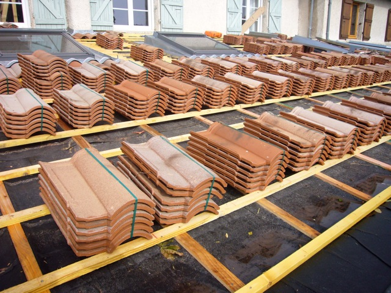

Publicado em:
Tipos de telhas e qual é a melhor escolha para sua obra?

Na hora de construir ou reformar, uma das principais decisões é a escolha do tipo de telha. O telhado influencia diretamente na estética, no conforto térmico e acústico, além da durabilidade da obra. Mas com tantas opções no mercado, qual é a melhor escolha? Neste artigo, vamos explicar os principais tipos de telhas, suas vantagens e desvantagens, para ajudar você a decidir com mais segurança.
Telha cerâmica (barro)
A mais tradicional no Brasil e em países de clima quente. Muito usada em residências.
- Vantagens: boa durabilidade, ótimo isolamento térmico, estética clássica.
- Desvantagens: pesada (exige estrutura reforçada) e pode quebrar facilmente no transporte.
- Preço médio: R$ 2 a R$ 5 por unidade.
Telha de fibrocimento
Mais leve e econômica, muito comum em galpões e coberturas simples.
- Vantagens: baixo custo, fácil instalação, resistente.
- Desvantagens: pouco isolamento térmico e estético limitado.
- Preço médio: R$ 25 a R$ 50 por m².
Telha metálica
Feita de aço galvanizado, alumínio ou zinco, é indicada para obras industriais e modernas.
- Vantagens: alta durabilidade, leveza, resistência ao fogo.
- Desvantagens: pouca eficiência térmica (esquenta muito) sem tratamento.
- Preço médio: R$ 50 a R$ 100 por m².
Telha de concreto
Mais robusta, com grande variedade de cores e formatos.
- Vantagens: resistente, bonita, bom isolamento acústico.
- Desvantagens: muito pesada, exige estrutura reforçada.
- Preço médio: R$ 3 a R$ 8 por unidade.
Telha ecológica
Produzida a partir de materiais reciclados (como fibras vegetais e plásticos).
- Vantagens: sustentável, leve, boa resistência.
- Desvantagens: menor variedade de estilos e preços ainda pouco acessíveis.
- Preço médio: R$ 30 a R$ 70 por m².
Telha sanduíche (termoacústica)
Composta por duas chapas metálicas e uma camada de isolante (poliuretano ou EPS) no meio.
- Vantagens: excelente isolamento térmico e acústico, moderna e resistente.
- Desvantagens: preço mais elevado.
- Preço médio: R$ 90 a R$ 200 por m².
Telhas térmicas x Telhas comuns: qual escolher?
Além dos tipos tradicionais, muitas pessoas ficam em dúvida entre usar telhas térmicas (como a telha sanduíche) ou as telhas comuns. A escolha depende principalmente do conforto desejado e do orçamento disponível.
| Características | Telhas Térmicas | Telhas Comuns |
|---|---|---|
| Isolamento térmico | Excelente (mantém o ambiente mais fresco no calor e mais quente no frio) | Baixo, pode deixar o ambiente quente ou frio dependendo do clima |
| Isolamento acústico | Muito bom, reduz barulho de chuva e impactos | Fraco, barulho de chuva ou granizo é bem perceptível |
| Durabilidade | Alta, pode durar mais de 30 anos | Boa, mas varia conforme o tipo (fibrocimento, cerâmica, metálica) |
| Preço médio | R$ 90 a R$ 200 por m² | R$ 25 a R$ 100 por m² (dependendo do material) |
| Indicação | Projetos que exigem conforto térmico/acústico, escritórios, residências modernas | Construções econômicas ou tradicionais, áreas externas, galpões |
Comparação de custos em Angola, Moçambique, Portugal e Brasil
Os preços das telhas variam bastante conforme o país, o tipo de telha e a região. Abaixo uma média aproximada para ajudar na comparação (valores em moeda local):
| País | Telhas Comuns (m²) | Telhas Térmicas (m²) |
|---|---|---|
| 🇦🇴 Angola | 7.000 a 15.000 AOA | 18.000 a 35.000 AOA |
| 🇲🇿 Moçambique | 450 a 1.200 MZN | 1.500 a 3.500 MZN |
| 🇵🇹 Portugal | 8€ a 20€ | 30€ a 60€ |
| 🇧🇷 Brasil | R$ 25 a R$ 100 | R$ 90 a R$ 200 |
Observação: os preços variam conforme a marca, a região, a qualidade e a quantidade comprada. Comprar em atacado ou diretamente de distribuidores pode reduzir bastante o custo final.
👉 Resumo: se o objetivo é economizar e garantir apenas uma cobertura básica, as telhas comuns são suficientes. Mas se o foco for conforto e eficiência, as telhas térmicas são o melhor investimento a longo prazo.
Qual é a melhor escolha para sua obra?
- Residências tradicionais: telha cerâmica ou de concreto.
- Construções econômicas: telha de fibrocimento.
- Obras modernas ou industriais: telha metálica ou sanduíche.
- Projetos sustentáveis: telha ecológica.
Conclusão
Não existe uma “melhor telha” universal, e sim a que se adapta ao seu orçamento, estilo e necessidades. Avalie fatores como durabilidade, conforto térmico, peso, estética e custo antes de tomar sua decisão. Dessa forma, você garante uma cobertura funcional, bonita e duradoura para sua obra.
👉 Veja também: Como funciona o empréstimo para construção em Angola,Portugal,Brasil e Moçambique